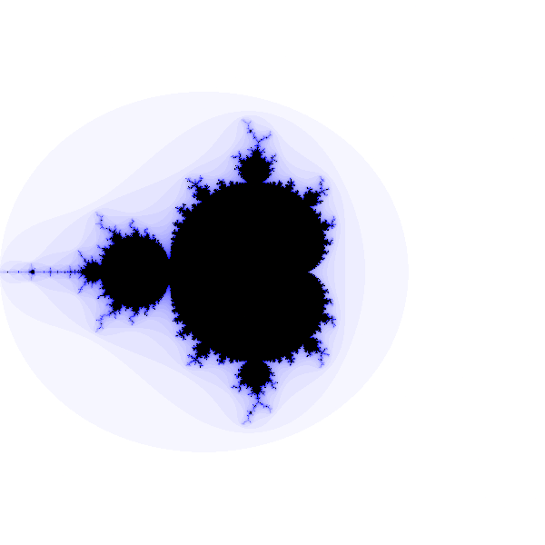

Fractal rendering part 3: Knobs and dials
Alright, now that we have a basic renderer built, let's try to make it more pretty. The basic idea for this is to collect and use some extra data from the iterations of a given pixel and use that to affect how we colour it. There are a virtually unending number of ways to do this, each one leading to new and unique patterns in the resulting image. Although none of these ideas are my own, they are quite standard and good to understand in order to be able to create your own.
Smooth iteration count
In the first part, we already saw an example of collecting data to affect the appearance of each pixel, we kept track of the number of iterations needed to escape, and coloured the outside of the fractal accordingly.
Now you may have already noticed the problem we are going to address now. Since there are a discrete number of possible iteration counts that each pixel could take, the neighbouring pixels that require the same number of iterations to escape all have the exact same colour. This is what causes the distinct bands to form around our fractal. If we want to smoothen this out then we need to get creative (by copying what everyone else does to solve this). This is the smooth iteration count.
The way to fix this is to use the magnitude of the final value of z from the sequence of iterations and use that to interpolate between the two neighbouring bands. For a given escape radius (let's assume the default of 2), there will be pixels in a band which just barely make it to 2 on the last iteration, whereas others which cross the line with room to spare. Taking the Mandelbrot update rule z ← z2 + c, and ignoring c, we can expect that the largest z's magnitude can be is roughly 4, which would represent values which were just barely inside the threshold on the previous iteration. This means that roughly 2 ≤ |z| < 4. This isn't quite accurate due to the c value being added each iteration, but in practice this works well enough.
The general rule for a chosen escape radius r is that the values will lie somewhere in the interval [r, r2]. Now simply scaling that interval to [0, 1]1 won't quite do as this will not create a completely smooth gradient. If we imagine the colour gradient we are displaying as a graph, the bands would look something like this:
Whereas simply linearly interpolating the escape magnitudes would give us something like this:
But what we actually want is something like a spline interpolation:
The problem with that is since we are doing this all pixel-by-pixel in a fragment shader (or in a big loop on a CPU), each pixel can only really know about itself. Therefore we need to try something else.
The solution is to use the log function. If we take log(|z|)/log(r), we get a value somewhere in the range [1, 2]. Take the log again, and normalize, we get log(log(|z|)/log(r))/log(2) in the range [0, 1] which when added to the iteration count finally gives us the nice smoothing effect that we wanted.
Now once we talk about other fractals, this will not work quite the same2, or even at all, due to them having different formulas which behave differently around the escape radius.
If you look really closely at your renderer, you might still notice very slight bands. This is due to the c value we have been ignoring which causes our assumptions about the ranges the smoothing value will fall into to break slightly. A simple solution is to raise the escape radius until c becomes negligible enough to not cause noticeable issues.
Anti-aliasing
When rendering very complex regions, certain regions of pixels can be very grainy due to the chaotic nature of fractals causing very different outcomes for points close to each other. The fate of an entire pixel is determined by a single point that we choose to represent it. If we want to avoid this and create nicer-looking images, we need to look into anti-aliasing.
Anti-aliasing is a process of smoothing jagged regions when rendering to a screen. There are multiple techniques used in the high-end graphics world of 3D games to do this, but I am just going to talk about the simplest one which is used all the time for fractals. We are simply going to take multiple samples for each pixel and combine the results to create a better representation of what is really going on in the region that pixel covers. This is called multipsample anti-aliasing or MSAA.
1 Actually [1, 0] since the points with smaller escape magnitudes will be closer inwards to the next band.
2 Once we talk about Multibrot fractals which just have a different exponent p instead of 2 in the formula, the log(2) can be switched out for log(p) and things work out just fine.